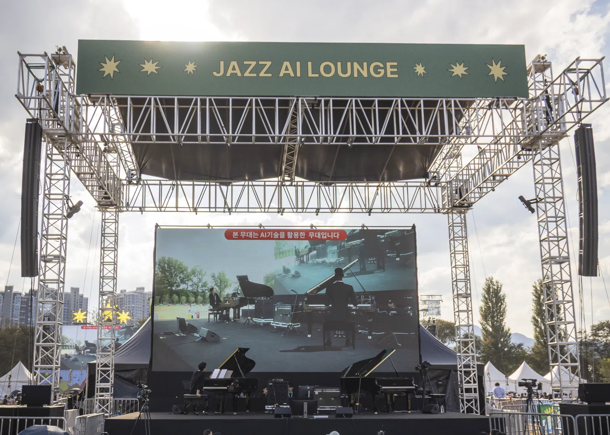
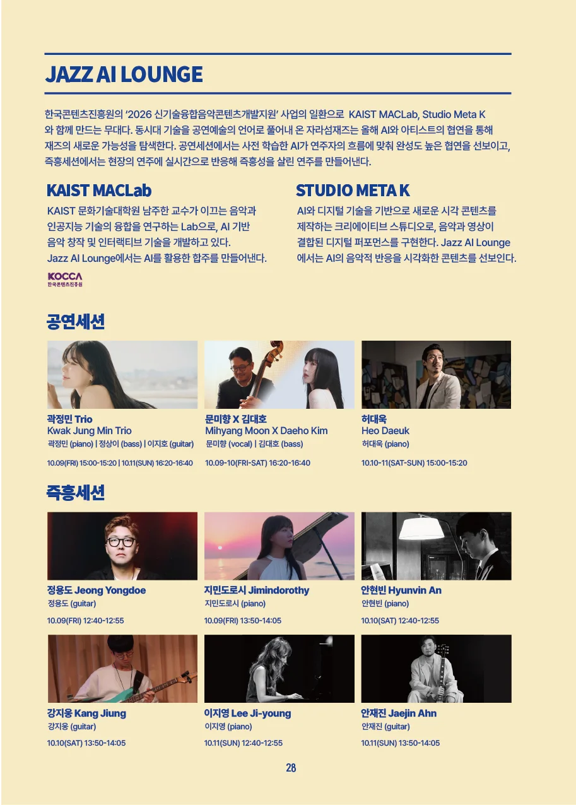
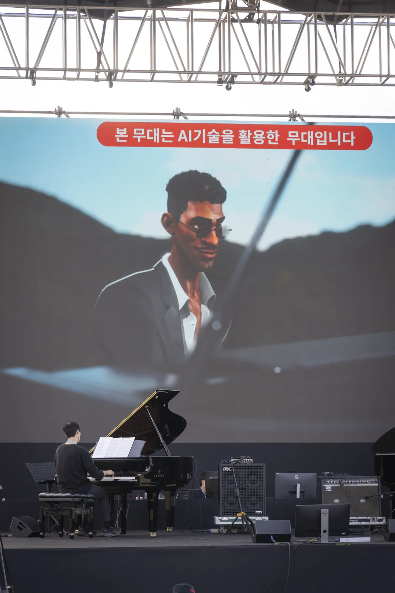
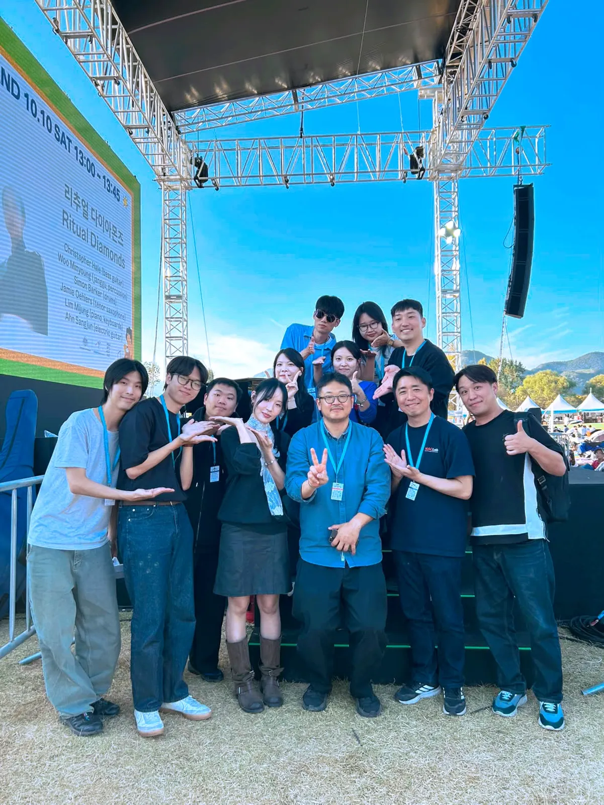

Program Book

My Contributions
Composer and editor of the AI pianist's generated passages, stage planning, and on-site operation
- Composed the AI pianist Scott's generated passages with AI, from planning what each passage would do to generating the material.
- Reworked the generated material extensively, editing it into stage-ready parts played on the Yamaha Disklavier.
- Chose where each passage entered the piece, so Scott's playing fit around the human performers.
- Took part in planning the overall project and the structure and flow of the stage program.
- Took part in the recording sessions with the artists.
- Worked on site operations throughout the three-day festival.
Performance Overview
Jazz lives on improvisation: players change the tempo, decide how many solo choruses to take on the spot, and invent new melodies, so the same tune is never played the same way twice. At the Jazz AI Lounge, a new stage at the 23rd Jarasum Jazz Festival, KAIST MAC Lab brought AI systems that listen to live playing and respond in real time.
Over three days, twelve jazz artists played twelve sets and 26 pieces with AI. An AI pianist took over the piano when a human player stopped, and accompaniment systems built bass, drum and piano parts around improvised playing. Every AI part sounded through a Yamaha Disklavier, with real key and pedal movement.
The stage was organized by the Jarasum Jazz Festival, with human–AI collaboration technology by KAIST MAC Lab (Prof. Juhan Nam) and visualization by Studio Meta K, as part of the Korea Creative Content Agency's 2026 New Technology Convergence Music Content Development program.
The work extends the lab's earlier stages with live performers, such as the human–AI relay performance at Daejeon Arts Center (2022) and the performances with soprano Sumi Jo (2023, 2024), from score-based classical music to jazz, where the form itself changes on stage.
Technologies
The stage brought together score following, real-time accompaniment generation, pianist hand-motion generation and automatic piano performance for live human–AI jazz.
Program
Performance sessions
AI parts prepared with each artist
Kwak Jung Min Trio · Mihyang Moon × Daeho Kim · Daeuk Heo
Improvisation sessions
Live AI accompaniment
Yongdoe Jeong · Jimindorothy · Hyunvin An · Jiung Kang · Ji-young Lee · Jaejin Ahn
Press
- The Korea Times'AI artists' perform improvised music at Jarasum Jazz Festival
- The Korea HeraldJarasum Jazz Festival puts French jazz and an AI pianist in spotlight
- The Herald BusinessKAIST's AI pianist improvises in real time with jazz musicians
- NoCut NewsA 'Jazz AI Artist' that listens to human performances and improvises accompaniment
- 헤럴드경제즉흥연주 피아니스트 ‘스콧’, AI였다…재즈 연주자도 ‘깜짝’
- 데일리안피아니스트 멈추자 AI가 연주…KAIST, 재즈 즉흥 협연
- 한국문화경제신문AI가 베이스·드럼 반주 즉석 생성…KAIST, 재즈 무대서 사람과 26곡 협연
- InstagramJarasum Jazz Festival: stage introduction and interview (video)
Photos

